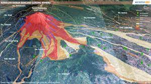
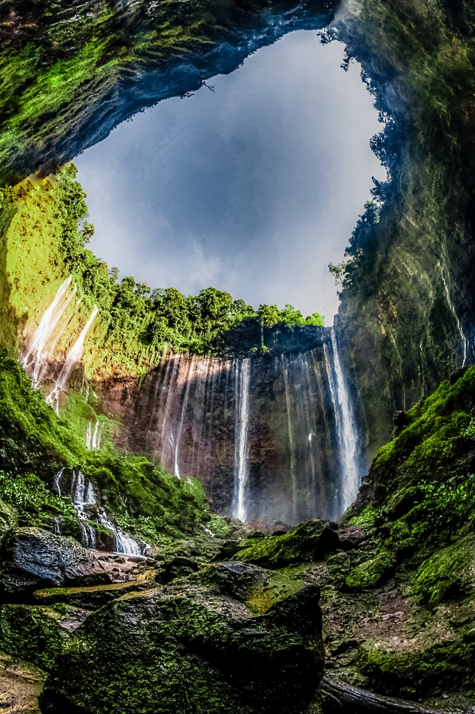

Sejarah

Gunung Semeru merupakan gunung tertinggi di Pulau Jawa, dengan puncaknya Mahameru, 3.676 meter dari permukaan laut (mdpl). Gunung ini terbentuk akibat subduksi Lempeng Indo-Australia kebawah Lempeng Eurasia. Gunung Semeru juga merupakan gunung berapi tertinggi ketiga di Indonesia setelah Gunung Kerinci di Sumatra dan Gunung Rinjani di Nusa Tenggara Barat.[2] Kawah di puncak Gunung Semeru dikenal dengan nama Jonggring Saloko.Gunung Semeru secara administratif termasuk dalam wilayah dua kabupaten, yakni Kabupaten Malang dan Kabupaten Lumajang, Provinsi Jawa Timur. Gunung ini termasuk dalam kawasan Taman Nasional Bromo Tengger Semeru. Semeru mempunyai kawasan hutan Dipterokarp Bukit, hutan Dipterokarp Atas, hutan Montane, dan Hutan Ericaceous atau hutan gunung.
Gunung Semeru yang terletak di wilayah Kabupaten Lumajang, Jawa Timur, erupsi pada Sabtu (4/12/2021) sore waktu setempat. Gunung Semeru merupakan salah satu gunung berapi aktif yang ada di Indonesia. Erupsi Gunung Semeru sudah terekam sejak tahun 1818. Gunung tersebut memiliki sejarah yang panjang.Gunung Semeru sering disebut dengan nama puncaknya yaitu Mahameru. Sebutan 'Mahameru' berasal dari bahasa Sanskerta yang memiliki arti 'meru agung'.Gunung Semeru atau Gunung Meru adalah sebuah gunung berapi kerucut di Jawa Timur, Indonesia.
Legenda Gunung Semeru,Menurut kepercayaan masyarakat Jawa yang ditulis pada kitab kuno Tantu Pagelaran yang berasal dari abad ke-15, pada dahulu kala Pulau Jawa mengambang di lautan luas, terombang-ambing dan senantiasa berguncang. Para Dewa memutuskan untuk memakukan Pulau Jawa dengan cara memindahkan Gunung Meru di India ke atas Pulau Jawa.Dewa Wisnu menjelma menjadi seekor kura-kura raksasa menggendong gunung itu dipunggungnya, sementara Dewa Brahma menjelma menjadi ular panjang yang membelitkan tubuhnya pada gunung dan badan kura-kura sehingga gunung itu dapat diangkut dengan aman.Dewa-dewa tersebut meletakkan gunung itu di atas bagian pertama pulau yang mereka temui, yaitu di bagian barat Pulau Jawa. Tetapi berat gunung itu mengakibatkan ujung pulau bagian timur terangkat ke atas. Kemudian mereka memindahkannya ke bagian timur pulau Jawa. Ketika gunung Meru dibawa ke timur, serpihan gunung Meru yang tercecer menciptakan jajaran pegunungan di pulau Jawa yang memanjang dari barat ke timur. Akan tetapi ketika puncak Meru dipindahkan ke timur, pulau Jawa masih tetap miring, sehingga para dewa memutuskan untuk memotong sebagian dari gunung itu dan menempatkannya di bagian barat laut. Penggalan ini membentuk Gunung Pawitra, yang sekarang dikenal dengan nama Gunung Penanggungan, dan bagian utama dari Gunung Meru, tempat bersemayam Dewa Shiwa, sekarang dikenal dengan nama Gunung Semeru. Pada saat Sang Hyang Siwa datang ke pulau Jawa dilihatnya banyak pohon Jawawut, sehingga pulau tersebut dinamakan Jawa.Lingkungan geografis pulau Jawa dan Bali memang cocok dengan lambang-lambang agama Hindu. Dalam agama Hindu ada kepercayaan tentang Gunung Meru, Gunung Meru dianggap sebagai rumah tempat bersemayam dewa-dewa dan sebagai sarana penghubung di antara bumi (manusia) dan Kayangan. Banyak masyarakat Jawa dan Bali sampai sekarang masih menganggap gunung sebagai tempat kediaman Dewata, Hyang, dan makhluk halus.Menurut orang Bali, Gunung Mahameru dipercayai sebagai Bapak Gunung Agung di Bali dan dihormati oleh masyarakat Bali. Upacara sesaji kepada para dewa-dewa Gunung Mahameru dilakukan oleh orang Bali. Betapapun upacara tersebut hanya dilakukan setiap 8-12 tahun sekali hanya pada waktu orang menerima suara gaib dari dewa Gunung Mahameru. Selain upacara sesaji itu orang Bali sering datang ke daerah Gua Widodaren untuk mendapat Tirta suci.
Geografis
Posisi geografis Semeru terletak antara 8°06' LS dan 112°55' BT.Jakarta - Sabtu sore (4/12/2021), Gunung Semeru yang berada di wilayah Provinsi Jawa Timur mengalami guguran awan panas.Gunung Semeru adalah gunung tertinggi di Pulau Jawa. Ketinggiannya mencapai 3.676 meter dari permukaan laut (mdpl), dengan puncaknya dikenal sebagai Mahameru.Suhu di puncak Mahameru berkisar antara 0 hingga 4 derajat celsius. Sedangkan suhu rata-rata di Gunung Semeru adalah 3-8 derajat celsius di malam hari. Sementara, di siang hari adalah 15-21 derajat celsius. Aktivitas vulkanik Gunung Semeru saat ini terdapat di Kawah Jonggring Seloko yang terletak di sebelah tenggara puncak Mahameru yang terbentuk sejak 1913. Kawah ini berada di sisi tenggara puncak Mahameru. Mengutip situs ESDM, letusan G. Semeru umumnya bertipe vulkanian dan strombolian, berupa penghancuran kubah/lidah lava, serta pembentukan kubah lava/lidah lava baru. Penghancuran kubah/lidah lava mengakibatkan pembentukan awan panas guguran yang merupakan karakteristik dari G. Semeru. Secara administratif Gunung Semeru terletak di Kabupaten Lumajang dan Kabupaten Malang, Jawa Timur. Gunung Semeru memiliki tipe strato dengan kubah lava. Letak geografis Gunung Semeru berada di 08'06,5' Lintang Selatan dan 112°55' Bujur Timur. Pada tahun 1913 dan 1946 Kawah Jonggring Saloka memiliki kubah dengan ketinggian 3.744,8 m hingga akhir November 1973. Di sebelah selatan, kubah ini mendobrak tepi kawah menyebabkan aliran lava mengarah ke sisi selatan meliputi daerah Pronojiwo dan Candipuro di Lumajang. Iklim Secara umum iklim di wilayah Gunung Semeru termasuk type iklim B (Schmidt dan Ferguson) dengan curah hujan 927 mm - 5.498 mm per tahun dengan jumlah hari hujan 136 hari/tahun dan musim hujan jatuh pada bulan November - April. Suhu udara dipuncak Semeru berkisar antara 0 - 4 derajat celsius .Suhu rata-rata berkisar antara 3 °C - 8 °C pada malam dan dini hari, sedangkan pada siang hari berkisar antara 15 °C - 21 °C. Kadang-kadang pada beberapa daerah terjadi hujan salju kecil pada saat perubahan musim hujan ke musim kemarau atau sebaliknya. Suhu yang dingin di sepanjang rute perjalanan ini bukan semata-mata disebabkan oleh udara diam, namun juga didukung oleh kencangnya angin yang berhembus ke daerah ini menyebabkan udara semakin dingin.
Wisata
Keindahan surga di lereng gunung semeru(objek wisata alam tumpak sewu) Air Terjun Tumpak Sewu Semeru atau yang kita kenal dengan sebutan Tebing Nirwana adalah obyek wisata yang terletak di Desa Wisata Sidomulyo Kec. Pronojiwo Kabupaten Lumajang yang berjarak 47 km arah selatan dai pusat kota Lumajang yang memiliki eksotika air terjun yang luar biasa, obyek ini berdekatan dengan letak obyek wisata Goa Tetes. Wisatawan akan dimanjakan dengan pemandangan dan eksotika air terjun yang menakjubkan dan memiliki sumber mata air alam dari Gunung Semeru. Nama Tumpak Sewu sendiri memiliki arti air terjun yang bertumpuk-tumpuk, maksudnya adalah bahwa Air Terjun Tumpak Sewu Semeru adalah gabungan dari banyaknya air terjun yang ada sehingga sangat menakjubkan. Adapun Fasilitas yang ada di dalam obyek wisata meliputi, Pakir, Toilet,Pusat Informasi, Kesehatan,Rest Area, Mushola,R Makan,Pusat Perbelanjaan, Homestay, Ojek Wisata, Jaringan Handphone, Tempat Sampah,Petunjuk Arah. Dan aksesebilitas Jalan beraspal dapat ditempuh dengan kendaraan roda 2 dan roda 4 hanya sampai di parkiran. setelah sampai di parkiran kendaraan, menuju ke View Point berjalan kaki sejarak ± 400 KM
Air terjun ini punya keunikan yang akan membuatmu terpesona. Aliran air terjun melebar bak tirai raksasa. Mengalir jatuh ke dasar air terjun melalui tebing setinggi 120 meter. Percikannya menyejukkan udara. Debit air tinggi membuat embun melingkupi air terjun. Tak heran, air terjun ini mendapat julukan Niagaranya Indonesia.Air terjun mengalir langsung dari gunung Semeru, atapnya pulau Jawa. Air terjun ini bak surga tersembunyi di lereng Semeru yang patut kamu datangi. Nuansa sejuk dan panorama asri yang pasti kamu dapatkan saat berada di air terjun Tumpak Sewu.
Sesuai namanya Tumpak berarti aliran air dan Sewu bermakna seribu. Tumpak Sewu memiliki arti seribu aliran. Pasalnya, banyaknya aliran air yang jatuh terlihat menyelimuti tebing. Namun, sumber air utama yang mengalir berasal dari sungai Glidik yang berwarna cokelat. Sisanya berasal dari mata air jernih di dinding tebing. Berada di ketinggian 500 meter, membuat suasana air terjun sangat sejuk. Vegetasi hijau di atas tebing menjadi indikasi hutan lereng Semeru asri. Formasi dinding menjulang membentuk setengah lingkaran. Pos Panorama ini menjadi spot favorit menikmati keindahan air terjun Tumpang Sewu.Tumpak Sewu berbatasan langsung dengan Kota Malang. Malang maupun Lumajang jaraknya sama. Cukup 2 jam berkendara untuk menikmati kesejukan Tumpak Sewu.